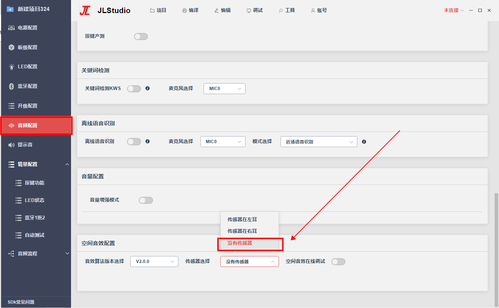
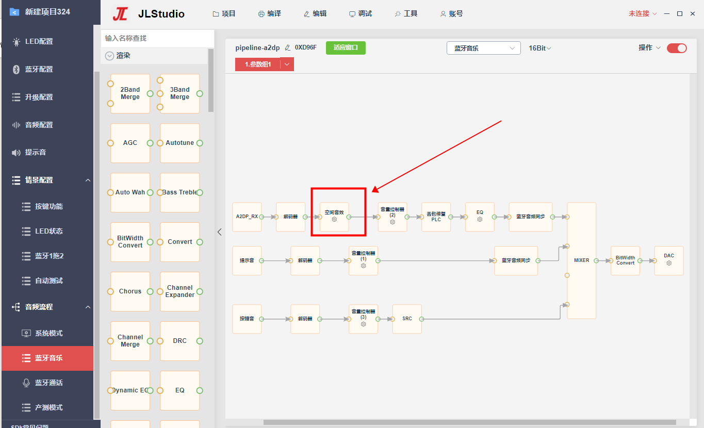
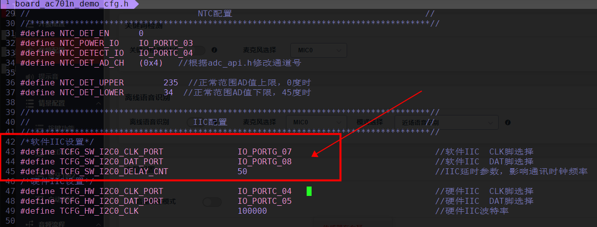
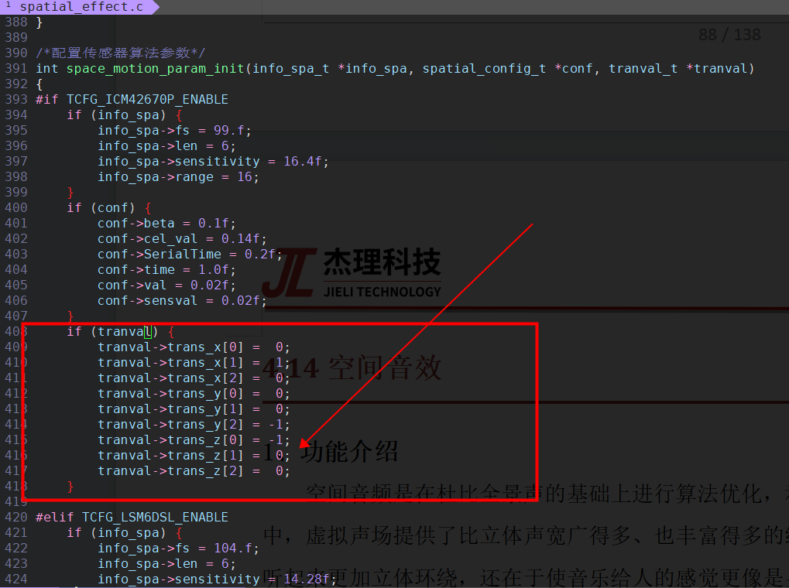
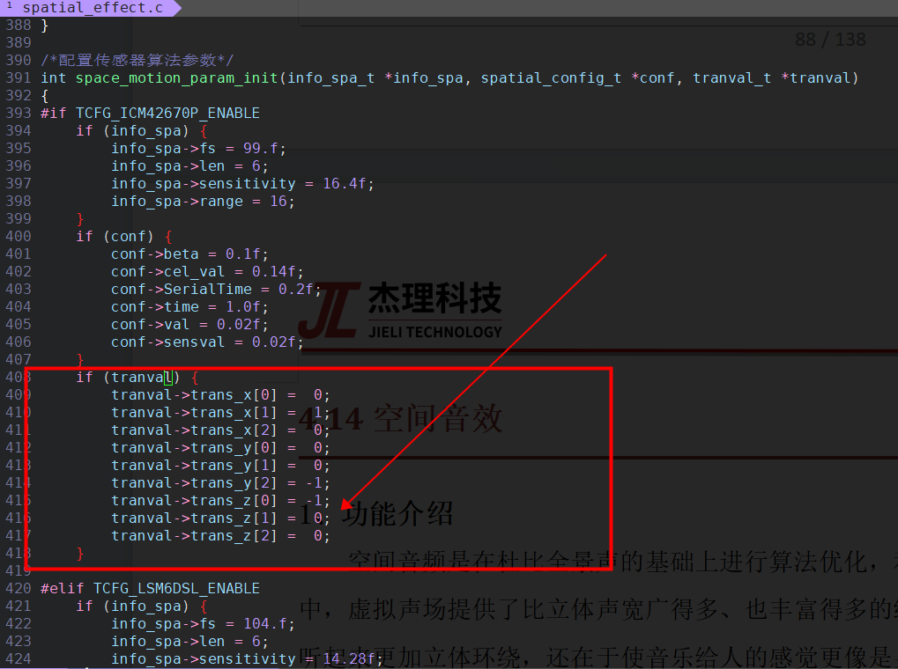
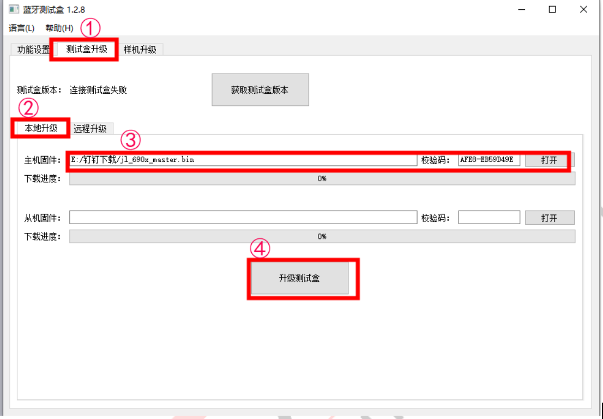
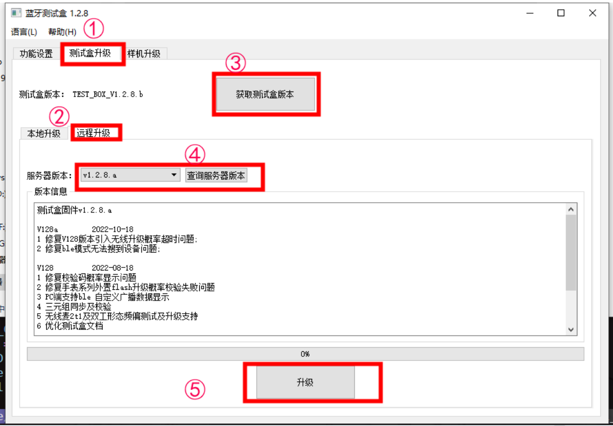
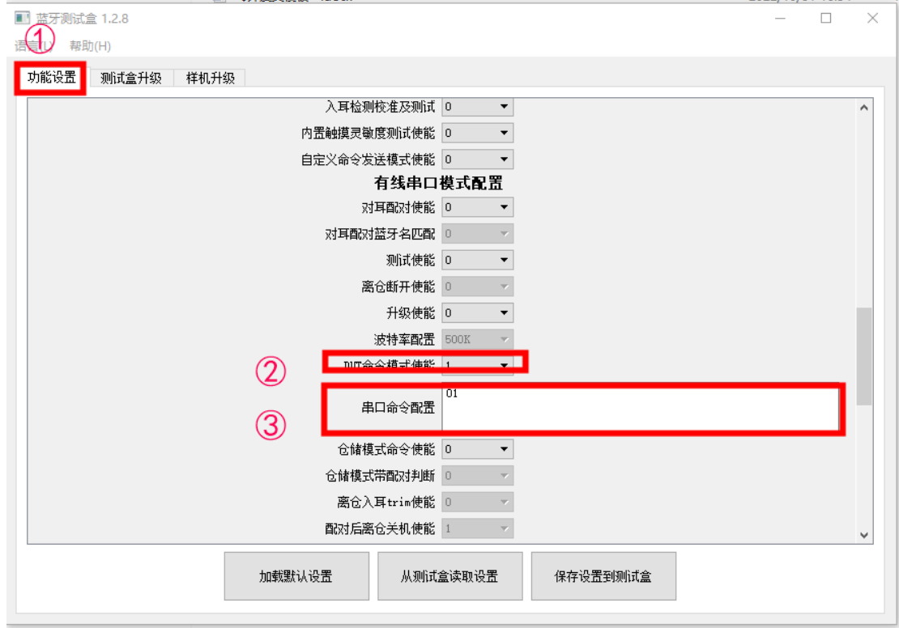
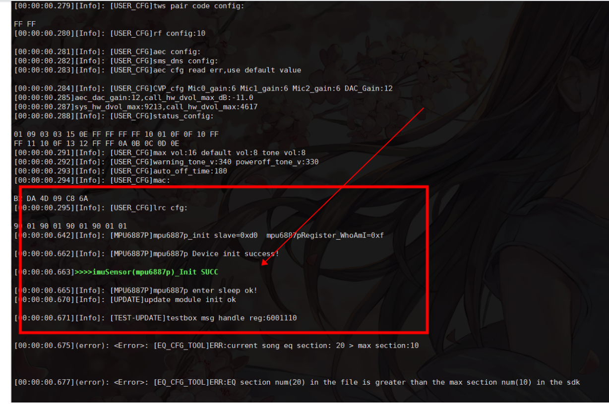

12.12. 空间音效
12.12.1. 功能介绍
空间音频是在全景声的基础上进行算法优化，利用陀螺仪跟踪头部姿态，调整声音方位。在空间音频中，虚拟声场提供了比立体声宽广得多、也丰富得多的细节。因此，空间音频的意义不仅在于歌曲听起来更加立体环绕，还在于使音乐给人的感觉更像是身临音乐现场，声音环绕在四周，营造一种现场演唱会的感觉。在空间音频的音乐播放中，声音可以随用户动作的变化而变化，带来真正的沉浸式体验。
固定头部模式：即仅仅有空间感的音效，不会跟踪头部动态。
头部跟踪模式：头部跟踪是在空间音频的基础上，增加了动态头部追踪技术。通过跟踪头部动作，音效也随之对应变化，使得空间音频的体验更加丰富。
12.12.2. 配置说明
12.12.2.1. 固定头部模式
只需要空间音频，不需要头部跟踪的情况下，不需要开传感器
（1）选择传感器选择：没有传感器

（2）在蓝牙音乐流程图的解码节点后面添加空间音效节点 
注意：tws的时候，加了空间音效节点，空间音效节点前面的数据流会跑双声道处理，在解码节点后面接空间音效节点数据流运算量最少
12.12.2.2. 固定头部+头部跟踪模式
头部跟踪模式需要陀螺仪传感器的配合，所有需要在固定头部模式配置的情况下，打开传感器配置
（1）配置传感器选择
TWS耳机的时候，头部跟踪只需要用一个耳机陀螺仪的数据，所有需要选择使用左耳的传感器还是右耳的传感器
头戴式立体声选择传感器在左耳和传感器在右耳都可以，但是不能选择没有传感器

（2）配置IIC引脚 程序支持使用软件IIC接口读取传感器，在board_ac701n_demo_cfg.h文件配置引脚 
（3）选择传感器型号 目前支持的陀螺仪传感器型号有：MPU6887P、ICM42670P、QMI8658、LSM6DSL、_MPU6050
a、使能传感器TCFG_IMUSENSOR_ENABLE
b、使能对应的传感器，只能使能一个传感器，不可以同时使能多个传感器
c、配置AD0_SELETE_IO引脚，没有时配置NO_CONFIG_PORT
d、配置TCFG_IMU_SENSOR_PWR_PORT传感器供电引脚，没有时配置NO_CONFIG_PORT

 （4）确认传感器位置
确认耳机佩戴时传感器相对于人头部的位置的方位参数，然后填到spatial_effects.c文件的space_motion_param_init函数里面的tranval参数里面

（4）确认传感器位置
确认耳机佩戴时传感器相对于人头部的位置的方位参数，然后填到spatial_effects.c文件的space_motion_param_init函数里面的tranval参数里面

确认方法：
根据人头的东、北、天坐标和传感器x、y、z坐标按顺序对比，方向不重合为0，找到重合的组合，方向相同为1，方向相反为-1
组合顺序：
东 - x
东 - y
东 - z
北 - x
北 - y
北 - z
天 - x
天 - y
天 - z
注意：人头部的东北天坐标可以简单理解为，正前方是北，右手边是东，正上方是天
12.12.3. 参数说明
（1）头部跟踪参数
track_sensitivity : 头部跟踪灵敏度，表示角度更新的快慢，处理突然转头声音产生突变
angle_reset_sensitivity : 静止角度复位灵敏度，表示静止时间后，角度复位过程的快慢，处理立刻复位角度，声音突变的情况
（2）V1.0.0音效算法参数
trackKIND : 角度合成算法选择
ReverbKIND : 混响算法选择
reverbance : 湿声比例
dampingval : 高频decay
（2）V2.0.0音效算法参数
radius : 声源半径，调节声音远近的效果
bias_angle : 偏角，调节声像
12.12.4. 常用接口
12.12.4.1. 切模式接口
//1、空间音效模式定义枚举
enum SPATIAL_EFX_MODE {
SPATIAL_EFX_OFF = 0, //空间音效关闭
SPATIAL_EFX_FIXED, //固定头部
SPATIAL_EFX_TRACKED, //头部跟踪
};
/*空间音效模式切换接口*/
void audio_spatial_effects_mode_switch(enum SPATIAL_EFX_MODE mode)
12.12.4.2. 角度回正接口
在spatial_effect.c文件里面把全局变量angleresetflag设置成1，可使角度回正0度， 可通过在spatial_effect.c里面定义函数spatial_audio_angle_reset()，并调用实现角度回正
/*角度归0回正*/
void spatial_audio_angle_reset()
{
angleresetflag = 1;
}
12.12.4.3. 角度自动回正时间
在spatial_effect.h里面配置宏ANGLE_RESET_TIME来设置角度自动回正时间，单位是秒
12.12.5. 校准说明
头部跟踪模式使用到陀螺仪传感器，需要使用测试盒对传感器进行校准
（1）升级测试盒固件 a、本地升级方式  b、在线升级方式  （2）设置测试盒校准命令：“DUT命令模式使能”设置成1，“串口命令配置”设为01  （3）校准传感器 a、将含有传感器的耳机保持pcb板子静止在水平面上(即传感器x轴和y轴在水平面上，z轴垂直于地面)；注意：水平面需要保证平坦，且没有任何的倾斜，校准过程不可以移动，保证能够用夹具固定而不是手拿以确保静止条件； b、测试盒串口和耳机充电引脚接在一起，进入传感器校准，校准10s后结束校准；
开始校准：测试盒“di”一声，显示屏显示“trim run…”
校准过程：显示屏显示“trim run…”
校准成功：测试盒“didi”两声，显示屏显示“trim succ ！”
校准失败：测试盒“dididi”三声，显示屏显示“trim fail ！”
12.12.6. 常见问题
（1）空间音效跟踪模式没有效果 通过开机打印检查传感器初始化是否成功，如果不成功，检查程序传感器iic引脚、iic供电引脚和iic地址选择引脚是否配置正确，检查硬件电路是否正常。  （2）空间音效跟踪模式效果不对 耳机陀螺仪传感器是否校准过？重新用测试盒校准一遍，确认校准成功